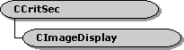

description: The CImageDisplay class is a helper class for GDI video renderers to manage the display format. ms.assetid: c9221e5c-30c6-489a-89d7-132203314dc8 title: CImageDisplay class (Winutil.h) ms.topic: reference ms.date: 4/26/2023 topic_type:
[The feature associated with this page, DirectShow, is a legacy feature. It has been superseded by MediaPlayer, IMFMediaEngine, and Audio/Video Capture in Media Foundation. Those features have been optimized for Windows 10 and Windows 11. Microsoft strongly recommends that new code use MediaPlayer, IMFMediaEngine and Audio/Video Capture in Media Foundation instead of DirectShow, when possible. Microsoft suggests that existing code that uses the legacy APIs be rewritten to use the new APIs if possible.]

The CImageDisplay class is a helper class for GDI video renderers to manage the display format. The object stores a VIDEOINFO structure that describes the current display mode, which is initialized in the object's constructor method. The object's CheckMediaType method checks whether a proposed media type can be rendered efficiently using GDI.
| Protected Member Variables | Description |
|---|---|
| m_Display | VIDEOINFO structure that describes the current display format. |
| Protected Methods | Description |
| CheckBitFields | Validates the color masks in a VIDEOINFO structure. |
| CountPrefixBits | Calculates the number of zero bits at the start of a specified bit field. |
| CountSetBits | Returns the number of bits set to 1 in a specified bit field. |
| Public Methods | Description |
| CheckHeaderValidity | Validates a BITMAPINFOHEADER structure. |
| CheckMediaType | Determines whether a proposed media type is compatible with the display format. |
| CheckPaletteHeader | Validates the palette entries in a VIDEOINFO structure. |
| CheckVideoType | Checks whether a specified VIDEOINFO format is compatible with the display format. |
| CImageDisplay | Constructor method. |
| GetBitMasks | Retrieves the color masks for a specified VIDEOINFO format. |
| GetColourMask | Retrieves the color masks for the current display format. |
| GetDisplayDepth | Retrieves the bit depth of the current display mode. |
| GetDisplayFormat | Retrieves a video format that describes the current display mode. |
| IsPalettised | Determines whether the current display format is palettized. |
| RefreshDisplayType | Updates the object's video format to match the specified display |
| Requirement | Value |
|---|---|
| Header | Winutil.h (include Streams.h) |
| Library | Strmbase.lib (retail builds); Strmbasd.lib (debug builds) |